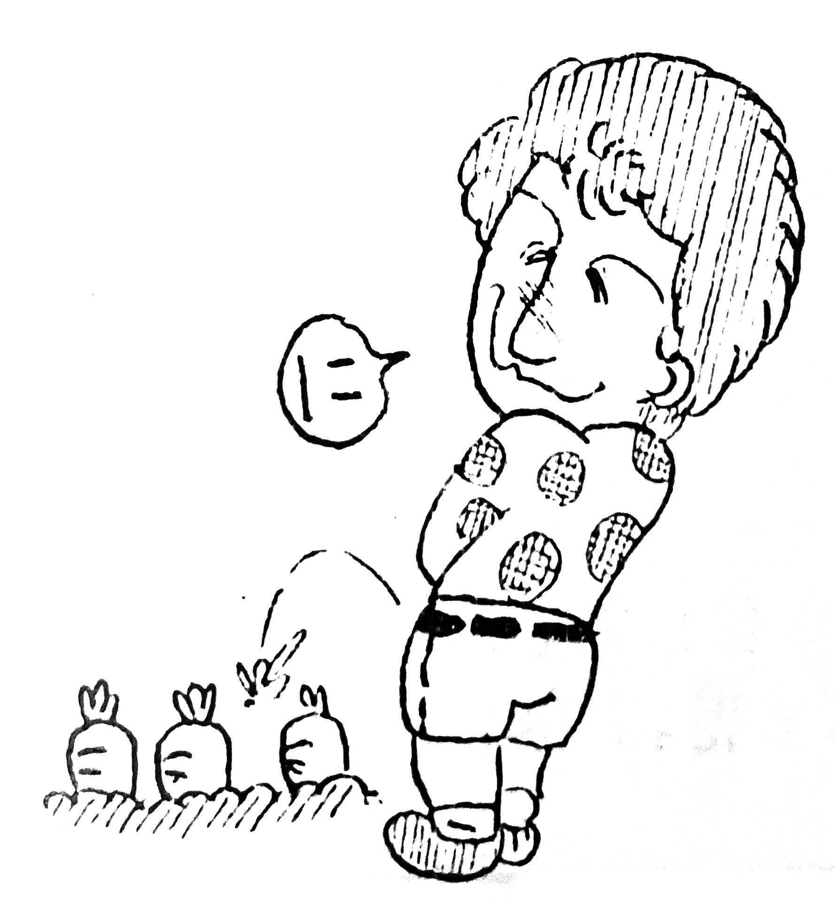

THE QUEEN was a rock'n'roll fancircle based out of Kyoto. Its president was known as Sari, with editors Zig and Lewice. I believe the club began in 1977 or thereabouts. It was run by mostly highschool and university students, but seemed to have an active and creative fanbase, putting out somewhere around 4-5 magazines a year and having a dues-paying membership numbering 90 or so by late 1979. Their newsletters are very text-based, full of news, opinions, concert reports, article translations, doodles, etc. They seem to have been in contact with the official Queen Fan Club in England as well as the Official Dutch Fan Club. Queen was the main feature, but other bands and acts of the time were discussed as well, especially when there wasn't much Queen news to report.

John waters some carrots... By No. 63, Shougomori Although the magazines I've come across are of a decidedly lower printing quality than other fanclub publications and doujinshi I've found (they're little more than photocopied pages stapled into booklets), the content inside is very passionate and thorough, and the regular publishing schedule they apparently managed to stick to is pretty impressive. The art is of good quality as well. Overall these publications reflect high-quality work by a bunch of tenacious teenagers. (Reflecting this, a club phone number is listed in each issue, along with instructions to call between 10 and 11 PM, probably when the person manning the phone was home from school activities for the day.) Hopefully more issues will turn up.